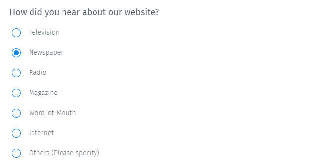
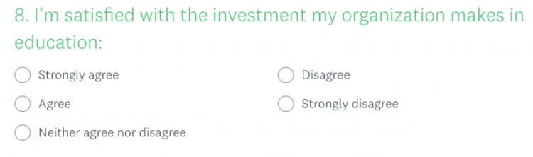
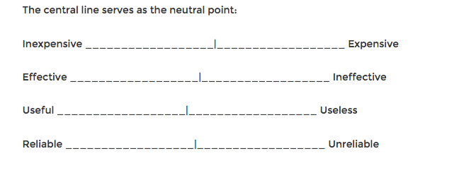
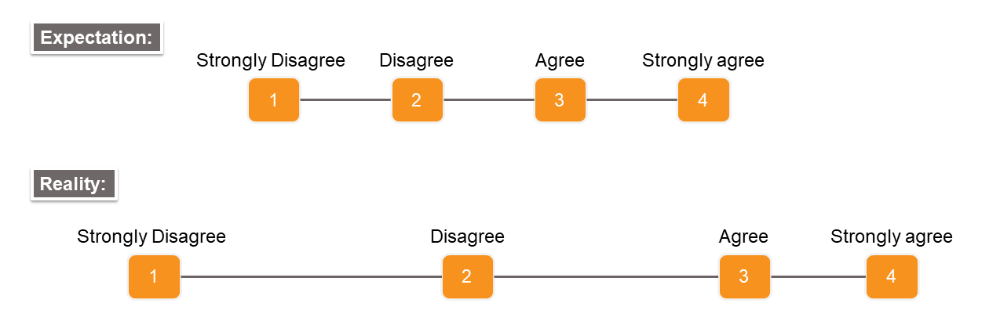
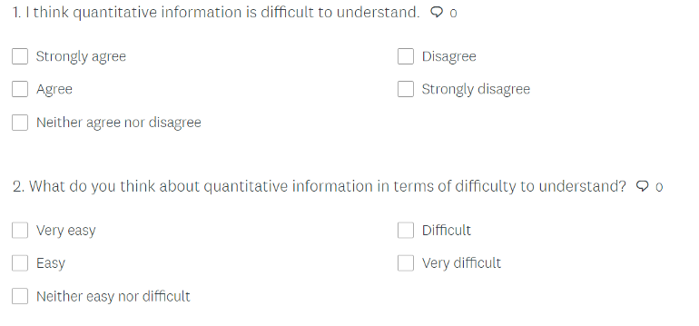

47 Design
47.1 Misc
- For sampling methods, see Surveys, Sampling Methods
- Item-specific surveys perform better/more reliable than agree/disagree surveys. The reason behind this is that participants are more certain while choosing a position in item-specific surveys compared to agree/disagree surveys
- For self-report surveys, ceiling/floor effects on score distributions disaappear when response options are greater than 2 or 3 (Thread, Paper)
- Survey Monkey sample size calculator
- If asking the Age or Income of a respondant:
- If calculating mean or median, exact numbers are best but respondants are usually hesitant to give out exact numbers for such data.
- Ranges give less accurate averages but respondants are more likely to answer.
- Group based on population your studying
- If it’s the general population, $20k or less is a good first rung; $21–39k is next; from there: $40–69k, $70–99k; $100–150k; and $150+
- If it’s college students, the ranges will be lower.
- Breaks between groups should line-up with known charcteristics of the population you’re studying
- If it’s the general population, $20k or less is a good first rung; $21–39k is next; from there: $40–69k, $70–99k; $100–150k; and $150+
- Use the phrases, jargon, and emotions that your customers are familiar with.
- Get a sense of this by getting on the phone and talking to your customers. Or run focus groups. Or run some on-site surveys.
- Best practices for the format of common demographic questions, link
47.2 Terms
- Self-Report Study - Type of survey, questionnaire, or poll in which respondents read the question and select a response by themselves without any outside interference. A self-report is any method which involves asking a participant about their feelings, attitudes, beliefs and so on.
- Ceiling and Floor Effects - An artificial lower limit on the value that a variable can attain, causing the distribution of scores to be skewed.
- Example: The distribution of scores on an ability test will be skewed by a floor effect if the test is much too difficult for many of the respondents and many of them obtain zero scores.
- Example: The distribution of scores on an ability test will be skewed by a ceiling effect if the test is much too easy for many of the respondents and many of them obtain perfect scores
47.3 Sources of Error
{kind=link}
- Misc
- Notes from Total Survey Error: Design, Implementation, and Evaluation (d/l pdf to see figures)
- survey error is defined as the deviation of a survey response from its underlying true value
- survey accuracy is defined as the deviation of a survey estimate from its underlying true parameter value
- Total Survey error - accumulation of all errors that may arise in the design, collection, processing, and analysis of survey data. It includes sampling variability, interviewer effects, frame errors, response bias, and non-response bias
- Non-Sampling Error
- Specification error occurs when the concept implied by the survey question differs from the concept meant to be measured in the survey.
- Often caused by poor communication between the researcher, data analyst, or survey sponsor and the questionnaire designer.
- Coverage or Frame error typically results from the frame construction process. Discrepancies between the (theoretical) target population of a survey and the frame which is used to draw a sample are equivalent to statistical errors.
- See Surveys, Sampling Methods >> Terms>> sampling frame
- In practice, frames are not error-free:
- they can never encompass the whole target population (because it always takes time to administrativally record an individual in a register),
- they also contain individuals which are no longer eligible (e.g. individuals who left the country and may keep recorded in the Register several months after they left).
- coverage errors or frame errors.
- Examples
- Some units may be omitted or duplicated an unknown number of times
- Some ineligible units may be included on the frame, such as businesses that are not farms in a farm survey.
- Nonresponse error - When the reason for nonresponse is related to the missing value, parameter estimates can be biased when nonresponse is not accounted for. Includes:
- unit nonresponse - sampling unit does not respond to any part of the questionnaire
- e.g. calling a person and them choosing not to answer or participate in the the survey
- item nonresponse - the questionnaire is partially completed.
- unit nonresponse - sampling unit does not respond to any part of the questionnaire
- Measurement error occurs when the method of obtaining the measurement affects the recorded value, often involving simultaneously the respondent, the interviewer, and the survey questionnaire.
- Processing error refers to errors that arise during the data processing stage, including errors in the editing of the data, data encoding, the assignment of survey weights, and tabulation of the survey data.
- Specification error occurs when the concept implied by the survey question differs from the concept meant to be measured in the survey.
- Sampling Error - - caused by collecting partial information over a fraction of the population rather than the whole population itself.
- Sampling scheme (e.g., multistage or multiple-phase sample)
- Sample size
- Choice of estimator (e.g., a ratio or regression estimator, levels of post-stratification)
- Non-Sampling Error
- Keeping sampling errors under control
- Survey questionnaires must be prepared with utmost care, intensively pre-tested and field-tested in order to detect issues in question wording, routing problems or any other inconsistency
- Modes of data collection must be chosen and combined judiciously in order to get most people to cooperate
- Interviewers must be carefully recruited and properly trained
- Communication and contact strategies towards participants must be designed and adapted in order to reach highest participation.
47.4 Response Formats
- item-specific (IS) - multiple choice response format
 - Agree/Disagree (A/D) - response format where the response are degrees of strength of agreement or disagreement

47.5 Response Scales
47.5.1 Misc
- The default values and ranges you use
- Examples:
- age: 5 yr default range (e.g. 20–25) instead of 10 yrs ranges
47.5.2 Types
- Dichotomous scales
- precise data, but they don’t allow for nuance in respondents’ answers.
- Examples: “Yes” or “No”; “True” or “False”; “Fair” or “Unfair”
- Quantitative Scales
- Rating Scales
- Provides more range than Dichotmous scales. Too generic for attitudes
- 1–10; 1–7; 1–5 (or Likert scale, also see below)
- label all number or none
- a 1–5 scale presented verbal descriptions for only the 1 and 5 endpoints and this led more people to choose the endpoints.
- A “school grade” scale is more reliable than other types of word labels
- label all number or none
- Ordinal and interval scales
- With ordinal, the numbers just have an intrinsic order
- With interval, the distance between the numbers must also be equal in terms of context
- e.g. rating something a 2 vs 1 doesn’t mean that being a 2 is “twice as good” as being a 1
- unless being 5 is also twice as good as being a 4, etc.
- e.g. rating something a 2 vs 1 doesn’t mean that being a 2 is “twice as good” as being a 1
- There is no practical difference between ordinal or interval scales
- Ratio Scales
- where there is a true zero and equal intervals between neighboring points. Unlike on an interval scale, a zero on a ratio scale means there is a total absence of the variable you are measuring. Length, area, and population are examples of ratio scales
- Rating Scales
- Semantic differential scales
- Gather data and “interpret based on the connotative meaning of the respondent’s answer.”
- Usually have dichotomous words at either end of the spectrum
- The more quantifiable the information is (behavior questions, for instance), the smaller the range should be.
- When you want to measure attitudes or feelings, using a 5- or 7-point semantic differential scale is a good strategy.
47.5.3 Likert Scale
- Notes from: Likert Scales: Friend or Foe?
- quantitative, rating scale
- Avoid using agree/disagree wording (see biases section below)
- Examples:
5-point:
- [1] Strongly Disagree, [2] Disagree
- [3] (4pt removes this response) Neither Disagree Nor Agree
- [4] Agree, [5] Strongly Agree
7-point:
- [1] Strongly disagree, [2] Disagree, [3] Somewhat disagree
- [4] Neither agree nor disagree
- [5] Somewhat agree, [6] Agree, [7] Strongly agree
More examples, Link
- Issues
- Ordinal and not Interval
- Answers are not all equidistant
- Respondents may perceive (4) Strongly Agree and (3) Agree very similarly and thus the difference between these two options might be much smaller than the difference between (3) Agree and (2) Disagree, despite having the same distance.

- Respondents may perceive (4) Strongly Agree and (3) Agree very similarly and thus the difference between these two options might be much smaller than the difference between (3) Agree and (2) Disagree, despite having the same distance.
- Numerical values assigned to the response options cannot be treated as interval data
- Parametric statistics (e.g., mean, standard deviation) and parametric statistical methods (e.g., summing up individual questions to find a total survey score, running a regression with survey scores) would NOT yield valid results
- Acceptable Analysis Methods:
- Median and Mode
- Ordinal regression
- Chi-Square Test of Independence
- Item Response Theory (IRT) modeling
- Graphical Tools (e.g. bar charts and correlation matrix plots)
- Answers are not all equidistant
- Adding a neutral option (i.e. Neither Disagree Nor Agree)
- May increase the accuracy of survey data because respondents who do not have a strong preference may prefer to select the neutral response option, instead of randomly selecting a response option or skipping the question
- May produce a bias: research shows that respondents often see the visual midpoint of a scale as representing the middle response option
- Solutions:
- use a Likert scale that consists of an even number of response options without a neutral option
- select survey questions for which respondents would not select the neutral option very easily.
- Choosing the number of responses
- Research shows that Likert scales with 2 to 5 response options often yield precise results, although smaller numbers of response options may reduce the measurement precision of a survey
- Researchers found that there are no clear advantages of using beyond 6 response options on a Likert scale
- Positively and negatively worded questions together
- Typically used to prevent response bias
- Positively and negatively worded questions are not necessarily mirror images of each other.
- Therefore, when analyzing survey data, reverse-coding the Likert scale for negatively worded questions (e.g., 1-Strongly agree; 2-Agree; 3-Disagree; 4-Strongly disagree) may not necessarily put these questions in the same direction as positively worded questions
- Research shows that negative wording may confuse respondents, leading to less accurate responses to the survey questions
- May be increasing response bias instead of reducing it.
- Studies indicate that respondents are more likely to disagree with negatively worded questions than to agree with positive ones
- Example
- A respondent who would select Agree for “My room was clean” might prefer to select Strongly Disagree for “My room was dirty”.
- Example
- Solutions:
- Keep the number of negatively worded questions minimal, while taking the impact of negatively worded questions on responses into account.
- Sliding Scales
- Ordinal and not Interval
47.5.4 Guttman Scale
.png)
- Dichotomous or Likert
- Gradually increases in specificity. The intent of the scale is that the person will agree with all statements up to a point and then will stop agreeing.
- The scale may be used to determine how extreme a view is, with successive statements showing increasingly extremist positions.
- Also, a useful tool for measuring satisfaction
- If needed, the escalation can be concealed by using intermediate questions.
47.5.5 Net Promoter Score (NPS)
- Customer loyalty metric, 0-9 (or 1-10)
- “How likely is it that you would recommend our company/product/service to a friend or colleague?”
- NPS = percent_promoters - percent_detractors
- Responses get broken up into 3 groups
- Promoters (9–10). These are your happiest and most loyal customers who are most likely to refer you to others. Use them for testimonials, affiliates, etc. These customers are key to business growth and thereby sustaining their customer experience is critical to the brand.
- Passives or Neutrals (7–8). These customers are happy but are unlikely to refer you to friends. They may be swayed to a competitor fairly easily. A business should look at ways and means of upgrading neutrals to promoters by understanding their requirements.
- Detractors (0–6). Detractors are unhappy customers who can be dangerous for your brand, spreading negative messages and reviews. Figure out their problems and fix them.
- Any NPS that is positive is usually perceived as good, and an NPS score of 50+ is considered excellent. The range of NPS is from -100 (all detractors) to +100 (all promoters).
- **Don’t use as a single predictor of customer loyalty**
- A customer might actually be very enthusiastic about the product, but they just might not ever feel the urge to recommend hemorrhoid cream to their pals
- Combine with other measures
- Ask follow-up questions.
- Promoters. What’s your favorite part about our product/service?
- Passives. What would make you love us?
- Detractors. What could we do to improve your experience?
- Combine it with user research.
- usability testing and other common conversion research techniques
- User testing
- Customer surveys
- Live chat
- Heat maps (e.g. buttons clicked on websites, scrolling actions)
- Find and fix issues.
- use info to prioritize projects that enhance user experience
- Market to promoters. Use Promoters, Passives, and Detractors as a segmentation tool.
- Give free stuff to “promoters” to incentize more buying or advocates to others by sharing on FB or twitter or write a review.
- Find correlations between certain product actions (heatmaps) and a higher NPS. This can help deduce what your product’s “magic moment” is when your users are truly activated and likely to derive delight from your product. Then you can focus on product optimizations to get more of your customer base to this point
- Ask follow-up questions.
- Issues
- response rate for surveys is relatively low
- time-consuming and costly affair to collect a sizeable amount of survey data
- relatively high-cost outlay associated with sending out surveys
- responses are typically quantitative. There is rarely qualitative information explaining the reason for the response
- Alternative: Use sentiment analysis on customer reviews and social media posts to generate a proxy for NPS based on sentiment scores.
47.6 Biases
- Acquiescence Bias
- A tendency to agree with statements rather than disagree
- Occurs with Agree/disagree (A/D) or Yes/No (Y/N) questions
- Effects can be stronger when the survey is administered by a person compared to self-administered surveys
- Some people’s personal inclination can lead them to be polite and avoid conflict, ultimately being aggregable.
- Some participants may consider themselves in lower social status than the interviewer/researcher. Therefore, they may believe what is offered in questions and unintentionally accept the ‘agree’ choice.
- In many cultures, while interacting with another person, agreeing is more well-suited than disagreeing
- Can cause a correlational relation between similarly worded questions, thus, eliminates some important constructs
- Even a small survey error stemming from acquiescence bias decreases the quality of the inferences
- Solution:
- convert Agree/Disagree (A/D) response format to item-specific (IS) response format
- Example

- Response Order Effect
- Choices presented earlier are more probable to be selected
- If the answer options are categorical, respondents tend to conceive them consecutively
- Effect is relatively small in rating scales
- Some respondents stop when they come to an acceptable answer and never see the rest of the options.
- If respondents spend more time on the first half of the response scale, they are more likely to choose one of the answers here.
- Solution:
- If using Agree/Disagree (A/D), convert to item-specific (IS) response format
- Respondants spend more time on IS format thus more likely to read all the anwsers
- Change the order of the responses randomly for different participants
- Some platforms like Survey Monkey and Qualdtrics websites have a randomize response order option
- Effect is smaller in vertical arrangement of responses
- If using Agree/Disagree (A/D), convert to item-specific (IS) response format
- Cognitive Errors
- Understanding the question
- Provide definitions for key terms in the questions
- Retrieval of information (Remembering)
- Unless it’s something really memorable, don’t ask about something that happened 6 months ago
- Use memory cues
- like sequencing the questions as the events would’ve been sequenced
- eliciting life events in the question
- Somethings are encoded into memories
- When we paid cash, we paid more attention to prices of certain items, because we had to get out the cash and count it. Being able to just swipe a card doesn’t encode such information as well.
- Integration of that information into an estimate or judgment
- Participants may underreport or overreport a behavior when the frequency is asked
- Reporting of that judgment (picking a response)
- There’s a cognitive burden when a respondant tries to bin there answer into one of the provided responses
- Greater burden with Agree/Disagree (A/D) format
- item-specific questions are less sequential compared to A/D questions. Thus, respondents may experience less burden on the cognitive process of reporting an answer
- Understanding the question